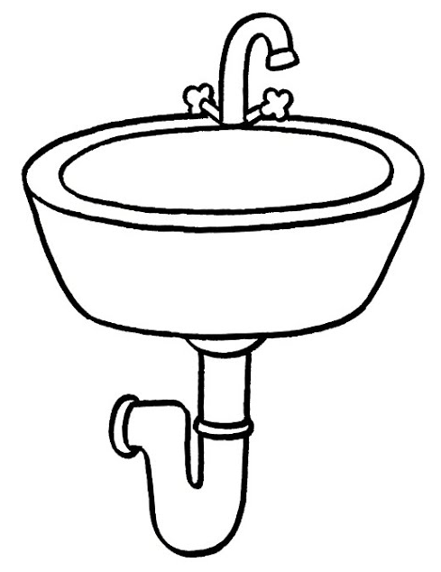

Git Advanced Workshop
1 Úvod
O mne
- Tibor Stanko, 33 rokov
- od 2020 dátový inžinier v Zurich Insurance, Bratislava 🇸🇰
- predtým 6 rokov v akademickej sfére vo 🇫🇷 (PhD, postdoc)
- rád automatizujem nudné úlohy s pomocou Pythonu 🐍
- nie som Git guru, no Git použÃvam denne už viac ako 9 rokov
- moje voľnoÄasové aktivity: 👨‍👩‍👧‍👦🚲⛰️🎸🎹🍺

Obsah tohto workshopu
2 Vnútro Gitu
Čo sa skrýva vo vnútri Gitu?

Čo je to Git?
- systém riadenia verziÃ
- angl. version control system (VCS) alebo source control management (SCM)
- zaznamenáva históriu vývoja projektu
- užitoÄný pre tÃmy aj pre jednotlivcov
- nie je len o kóde, dovoľuje ukladať ľubovoľné súbory (aj netextové)
Ale… Čo je skutoÄne Git?
- Git je obsahovo adresovateľný systém súborov
- To znamená, že adresa súboru (kľúč) je definovaná pomocou jeho obsahu
- V jadre systému Git sa nachádza jednoduché úložisko údajov, ku ktorým sa dá pristupovať pomocou kľúčov
- Kľúč = SHA-1 hash , napr.
655a20f99af32926cbf6d8fab092506ddd70e49c
Čo Git ukladá?
Ide najmä o:
- objekty (objects)
- referencie (references alebo refs)
Objekty
- blob
- len obsah, žiadne metadáta (cesta, meno)
- tree = strom
- strom obsahuje bloby alebo Äalšie stromy
- commit = záznam
- obsahuje ukazovatele na strom a iný commit (rodiÄ)
- tag
- definuje alternatÃvne meno pre iný objekt, ktoré môže byť použité na interakciu s objektom namiesto hashu
Každý objekt je identifikovateľný s pomocou svojho SHA-1 hashu.
Referencie = ukazovatele na objekty
- vetva nie je sled commitov, ale len ukazovateľ (pointer) na urÄitý commit
cat .git/refs/heads/main
# 7c66409021358486e63d2d40c9b07e2c35e8124d
cat .git/refs/remotes/origin/dev
# c29dc332ac3eebebffc5726e16d0e91df170103f
cat .git/refs/tags/v2.6.3
# d49de0ec577052db3e47e2baf5aff0be738637acTip: v powershelli môžeš namiesto prÃkazu cat použiť gc (alias pre Get-Content)
Typy prÃkazov
Porcelain:
- high-level prÃkazy, ktoré použÃva bežný smrteľnÃk
commit,log,merge,pull,push,status, …
Plumbing:
- “core git”
- low-level prÃkazy, použÃvané interne Gitom (prÃp. powerusermi)
cat-file,commit-tree,hash-object,ls-files,merge-base,rev-parse, …

Demo
- powershell
.gittree
.git
├── HEAD ref: refs/heads/main
├── index
├── objects
│ └── 59 blob [test.txt] 'version 1'
│ └── 4dc0e39bc4468ee19c67e65d37b97eb963b68b
│
│
│
│
│
│
│
│
│
│
│
│
│
│
│
│
└── refs
├── heads
|
└── tags
.git ├── HEAD ref: refs/heads/main ├── index ├── objects │ ├── 59 blob [test.txt] 'version 1' │ │ └── 4dc0e39bc4468ee19c67e65d37b97eb963b68b │ ├── 67 tree [blob 594d] │ │ └── 4d4d31b97233152f3be1825cc9e765fa2b2859 │ └── f8 commit [tree 674d] "First" │ └── 0a04ee3dfbeb5eb666ade615abc617c1ea20e3 │ │ │ │ │ │ │ │ │ │ │ │ └── refs ├── heads | └── main f80a... └── tags
.git ├── HEAD ref: refs/heads/main ├── index ├── objects │ ├── 59 blob [test.txt] 'version 1' │ │ └── 4dc0e39bc4468ee19c67e65d37b97eb963b68b │ ├── 67 tree [blob 594d] │ │ └── 4d4d31b97233152f3be1825cc9e765fa2b2859 │ ├── f8 commit [tree 674d] "First" │ │ └── 0a04ee3dfbeb5eb666ade615abc617c1ea20e3 │ ├── f0 blob [test.txt] 'version 2' │ │ └── d983103c610431663d84b3012d1b172f2f52ea │ ├── 37 tree [tree 674d, blob f0d9] │ │ └── 87931e43c8baf51f3ffafc44f6394651a505ca │ └── 53 commit [tree 3787, par. f80a] "Second" │ └── 9f7e662b0fa2ceb0df1dc9332179b06e5cdaec │ │ │ │ │ │ └── refs ├── heads | └── main 539f... └── tags
.git ├── HEAD ref: refs/heads/main ├── index ├── objects │ ├── 59 blob [test.txt] 'version 1' │ │ └── 4dc0e39bc4468ee19c67e65d37b97eb963b68b │ ├── 67 tree [blob 594d] │ │ └── 4d4d31b97233152f3be1825cc9e765fa2b2859 │ ├── f8 commit [tree 674d] "First" │ │ └── 0a04ee3dfbeb5eb666ade615abc617c1ea20e3 │ ├── f0 blob [test.txt] 'version 2' │ │ └── d983103c610431663d84b3012d1b172f2f52ea │ ├── 37 tree [tree 674d, blob f0d9] │ │ └── 87931e43c8baf51f3ffafc44f6394651a505ca │ ├── 53 commit [tree 3787, par. f80a] "Second" │ │ └── 9f7e662b0fa2ceb0df1dc9332179b06e5cdaec │ ├── dc blob [new.txt] 'new' │ │ └── 334bff12fb7d7404c79935fa3ba535c3bb28d0 │ ├── b0 tree [tree 674d, blob f0d9, blob dc33] │ │ └── ea95a512bad604278bcc96e8b8e726b462e010 │ └── 62 commit [tree b0ea, par. 539f] "Third" │ └── e37a96f8f09d0421644817dea320108ceac481 └── refs ├── heads | └── main 62e3... └── tags
.git pre reálny projekt
pybrickz/.git │ COMMIT_EDITMSG posledný popis záznamu upravený v lokálnom repozitári │ config lokálna konfigurácia, aplikuje sa iba na tento repozitár │ description don't worry about it │ FETCH_HEAD pamätá si, Äo bolo naposledy stiahnuté zo vzdialeného repozitára │ HEAD ukazovateľ na aktuálnu vetvu/commit │ index binárny zoznam ciest a SHA-1 hashov, obsah zobraz cez `git ls-files --stage` │ ORIG_HEAD predchádzajúci stav HEAD, nastavený prÃkazmi s potenciálne nebezpeÄným správanÃm │ packed-refs zabalené referencie (heads, tags) ├───hooks […] ├───info […] ├───logs […] ├───objects […] └───refs […]
.git/objects
pybrickz/.git │ […] ├───hooks […] ├───info […] ├───logs […] ├───objects objekty - bloby, stromy (trees), commity │ ├───00 │ │ 57f7cf16175d94fa850ad30918dffcd4cd850c │ ├───01 │ │ 4daec1e8a05a71852209c4caf9750bfe4717b1 ... │ ├───fe │ │ 1c754ef352dece245b5f7a0d7047b048d7b1d9 │ │ 8a73f88812537678fde89e91c19c87623ff47c │ ├───ff │ │ 7e837bf1dc59b8835767fdcf789e308528498a │ ├───info […] │ └───pack […] └───refs […]
.git/refs
pybrickz/.git
│ […]
├───hooks […]
├───info […]
├───logs […]
├───objects […]
└───refs referencie - vetvy, vzdialené vetvy, tagy
├───heads […]
├───remotes […]
└───tags […]
.git/refs/heads
pybrickz/.git
│ […]
├───hooks […]
├───info […]
├───logs […]
├───objects […]
└───refs
├───heads
│ dev
│ main
│ staging
│ ├───bugfix
│ │ bugfix-1 vetva vytvorená cez `git branch bugfix/bugfix-1`
│ │ bugfix-2 vetva vytvorená cez `git branch bugfix/bugfix-2`
│ └───feature
│ feature-A vetva vytvorená cez `git branch feature/feature-A`
│ feature-B vetva vytvorená cez `git branch feature/feature-B`
├───remotes […]
└───tags […]
.git/refs/remotes
pybrickz/.git
│ […]
├───hooks […]
├───info […]
├───logs […]
├───objects […]
└───refs
├───heads […]
├───remotes
│ ├───gh
│ │ main
│ └───origin
│ │ dev
│ │ HEAD
│ │ main
│ ├───bugfix
│ │ bugfix-2
│ └───feature
│ my-awesome-feature-A
└───tags […]
.git/refs/tags
pybrickz/.git
│ […]
├───hooks […]
├───info […]
├───logs […]
├───objects […]
└───refs
├───heads […]
├───remotes […]
└───tags
v1.0.0
v1.0.1
...
v2.6.4
v2.7.0
.git/HEAD
HEADje ukazovateľ na aktuálnu vetvu alebo commitDETACHED HEADje situácia keÄ HEAD ukazuje na commit ktorý nie je hlavou vetvy
Úlohy (1)
- Naklonuj si testovacà repozitár:
- Z prieÄinku
.gitnájdi súbor s hashom na ktorý ukazuje vetvaslovak. - Porovnaj hash s výstupom z prÃkazu
git rev-parse slovak. - Viacnásobným použitÃm prÃkazu
git cat-file -pzisti aký obsah sa nacháda v súborehello.pyna vetveslovak.- Hint: ako argument za
-ppouži hash z predošlého kroku.
- Hint: ako argument za
OdboÄka: Ako rozbaliť git objekty?
Po naklonovanà repozitára sa v prieÄinku .git/objects nachádzajú všetky objekty, ktoré Git použÃva, niektoré z nich však môžu byť zabalené v prieÄinku pack.
git clone https://github.com/bbrrck/hello.git
cd hello
ls .git/objects
# .git/objects/info
# .git/objects/pack
ls .git/objects/pack
# .git/objects/pack/pack-48cae0e3bd98461308f23caeb2cfcc3df0b34da8.idx
# .git/objects/pack/pack-48cae0e3bd98461308f23caeb2cfcc3df0b34da8.pack
# .git/objects/pack/pack-48cae0e3bd98461308f23caeb2cfcc3df0b34da8.revOdboÄka: Ako rozbaliť git objekty? (2)
Manuálne rozbalenie objektov je možné pomocou prÃkazu git unpack-objects. Ak však tento prÃkaz použijeme na súbory z predošlého prÃkladu, niÄ sa nestane. Je to preto, lebo Git nerozbalà objekty ktoré sa už nachádzajú v repozitári. Pred rozbalenÃm objektov je preto potrebné ich najprv presunúť do inej Äasti repozitára.
# Presuň súbory so zabalenými objektami do doÄasného prieÄinku
mkdir temp; mv .git/objects/pack/* temp
# Rozbaľ objekty
cat temp/*.pack | git unpack-objects
# Vymaž doÄasný prieÄinok
rm -rf tempMimo experimentovania manuálne rozbaľovanie objektov nie je potrebné.
3 Merge vs. Rebase
ZluÄovanie zmien
V Gite existujú dva hlavné spôsoby, ako integrovať zmeny z jednej vetvy do druhej: merge a rebase.
ZluÄovanie zmien
Zlúčenie cez merge
- najjednoduchÅ¡Ã spôsob zluÄovania vetiev
- trojcestné zlúčenie medzi dvoma vetvami (napr.
mainafeature) a ich najnovÅ¡Ãm spoloÄným predkom - vytvorà nový commit
Zlúčenie cez merge
Zlúčenie cez rebase
- rebase vetvy
featurena vetvumainznamená presunutie zaÄiatku vetvyfeaturena koniec vetvymain - znamená to, že commity z
featurebudú znova vytvorené na vetvemain - hlavná výhoda: Äistejšia, lineárnejšia história projektu a menej “vidliÄiek”
Zlúčenie cez rebase
Kedy nepoužÃvať rebase?
- nikdy nepoužÃvajte
git rebasena verejných alebo kolaboratÃvnych vetvách (najmämain) - v opaÄnom prÃpade môže dôjsť ku zmene alebo dokonca zmazaniu Äasti histórie
Kedy nepoužÃvať rebase?
Demo: merge
git clone https://github.com/bbrrck/hello.git hello-merge; cd hello-merge
git merge origin/french
# Auto-merging hello.py
git merge origin/slovak
# CONFLICT (content): Merge conflict in hello.py
# ... vyrieš konflikt ...
git add .
git commit
# [main cef4a72] Merge remote-tracking branch 'origin/slovak'Demo: rebase (french)
git clone https://github.com/bbrrck/hello.git hello-rebase; cd hello-rebase
git checkout french
git rebase main
# Successfully rebased and updated refs/heads/french.
git checkout main
git merge french
# Updating 0297280..5f6f019
# Fast-forward
# hello.py | 11 ++++++++++-
# 1 file changed, 10 insertions(+), 1 deletion(-)Demo: rebase (slovak) - konflikt
git log --oneline --graph --all
Merge:
* cef4a72 (main) Merge branch 'slovak' |\ | * 163a9c3 (slovak) Add docstring for slovak | * bd67d8d Fix slovak | * 75fcf88 Add slovak * | bc3f86b Merge branch 'french' |\ \ | * | a31caf9 (french) Add docstring for french | * | 6d348f3 Add french | |/ * / 0297280 Add docstring for default |/ * 4b4a8ad Add hello.py * 60d4d94 Initial commit
Rebase:
* ab2fda1 (main, slovak) Add docstring for slovak * 806b97a Add slovak * 5f6f019 (french) Add docstring for french * ea40a3b Add french * 0297280 Add docstring for default | * 163a9c3 Add docstring for slovak | * bd67d8d Fix slovak | * 75fcf88 Add slovak |/ | * a31caf9 Add docstring for french | * 6d348f3 Add french |/ * 4b4a8ad Add hello.py * 60d4d94 Initial commit
git log main --oneline
Merge (10):
cef4a72 (main) Merge branch 'slovak' bc3f86b Merge branch 'french' 0297280 Add docstring for default 163a9c3 (slovak) Add docstring for slovak bd67d8d Fix slovak 75fcf88 Add slovak a31caf9 (french) Add docstring for french 6d348f3 Add french 4b4a8ad Add hello.py 60d4d94 Initial commit
Rebase (7):
ab2fda1 (main, slovak) Add docstring for slovak 806b97a Add slovak 5f6f019 (french) Add docstring for french ea40a3b Add french 0297280 Add docstring for default 4b4a8ad Add hello.py 60d4d94 Initial commit
Úlohy (2)
- Naklonuj si k sebe dve kópie testovacieho repozitára:
git clone https://github.com/bbrrck/zoo.git zoo-merge
git clone https://github.com/bbrrck/zoo.git zoo-rebase- V repozitári
zoo-merge:- Zlúč cez prÃkaz
git mergevetvyorigin/krokodilaorigin/gorilado lokálnej vetvymain. - V oboch prÃpadoch vyrieš vzniknuté konflikty.
- Zlúč cez prÃkaz
(pokraÄovanie na Äalšom slajde)
Úlohy (2)
- V repozitári
zoo-rebase:- Prepni sa na vetvu
gorilaa zlúč na ňu cez prÃkazgit rebasevetvumain. Vyrieš vzniknuté konflikty. - Prepni sa na vetvu
maina zlúč na ňu cez prÃkazgit mergevetvugorila. - Prepni sa na vetvu
krokodila zlúč na ňu cez prÃkazgit rebase -ivetvumain. Prostredný commit oznaÄ akofixup. Vyrieš vzniknuté konflikty. - Prepni sa na vetvu
maina zlúč na ňu cez prÃkazgit mergevetvukrokodil.
- Prepni sa na vetvu
- S pomocou prÃkazu
git logporovnaj stav oboch repozitárov. - Čo by sa vo výsledku zmenilo, ak by si vynechal(a) krok 3b?
4 Časté otázky a problémy
git revert
git revert HEAD # odstráň zmeny vykonané v poslednom commite
git revert HEAD~1 # odstráň zmeny vykonané v predposlednom commite
git revert d49de0 # odstráň zmeny vykonané v commite s hashom d49de0PrÃkaz git revert vytvorà novú verziu, a nemenà históriu repozitára.
git reset
PrÃkaz git reset menà históriu repozitára a môže spôsobiť stratu súborov.
reset vs revert vs checkout
| PrÃkaz | Kontext | Použitie |
|---|---|---|
git reset |
Commit | ZahoÄ commity v súkromnej vetve alebo zahoÄ necommitnuté zmeny |
git reset |
Súbor | Odstráň súbor z prÃpravnej zóny (z indexu) |
git checkout |
Commit | Presun medzi vetvami alebo prezeranie starých verzià |
git checkout |
Súbor | ZahoÄ zmeny v pracovnom adresári |
git revert |
Commit | Vráť commity vo verejnej vetve |
git revert |
Súbor | (N/A) |
Ako vrátim späť lokálne zmeny?
Ako vrátim späť zmeny ktoré už boli pushnuté?
Ako vrátim späť Äasť commitu?
git revert -n $bad_commit # vráť commit späť, ale neukladaj zmeny
git reset HEAD . # zruš pridanie zmien
git add --patch . # pridaj požadované zmeny
git commit # vytvor commit z týchto zmien
git checkout -- . # odstráň ostatné zmenyPozn.: Zmeny, ktoré pridávame pomocou prÃkazu git add --patch, sú zmeny, ktoré chceme vrátiť späť, nie zmeny, ktoré chceme ponechať.
Ako premenujem lokálnu vetvu?
Ako vymažem lokálnu aj vzdialenú vetvu?
Ako presuniem posledných n commitov na novú vetvu?
Presunutie posledných 3 commitov z main na novú vetvu feature:
Ako odstránim súbory z prÃpravnej zóny?
Ako zmenÃm popis v už vytvorenom commite?
Ak už bol starý commit pushnutý na remote, po použità git commit --amend je potrebné pushnúť cez git push --force alebo --force-with-lease.
Ako pridám súbory do už vytvoreného commitu?
Ak už bol starý commit pushnutý na remote, po použità git commit --amend je potrebné pushnúť cez git push --force alebo --force-with-lease.
Ako môžem resetovať alebo vrátiť súbor na konkrétnu verziu?
5 Git workflowy = modely vetvenia
V Gite existuje mnoho rôznych workflowov, ktoré sa lÃÅ¡ia v tom, ako použÃvajú vetvenie (branching). V tejto kapitole si ukážeme niekoľko najpoužÃvanejÅ¡Ãch workflowov a ich výhody a nevýhody.
Aké workflowy existujú?
- Centralized
- Feature branch (FB)
- Trunk-based development (TBD)
- Gitflow
- Forking workflow
- etc.
Projekt Git Workflows Warehouse obsahuje katalóg 50-tich workflowov a tiež užitoÄný zoznam zdrojov.
Centralized workflow
- všetci vývojári pracujú na jednej vetve (
main), žiadne Äalšie vetvy sa nepoužÃvajú
Výhody:
- jednoduché pochopenie, implementácia, aj použitie
- perfektne lineárna história
Nevýhody:
- riešenie konfliktov môže byť zložité
- nevyužÃva potenciál distribuovaného systému
Centralized workflow (Atlassian)
Feature branching
- vývoj prebieha na samostatných
featurevetvách, ktoré sa následne zluÄujú domainvetvy
Výhody:
- nové funkcie sú vyvÃjané izolovane, stabilný
main - umožňuje použÃvanie pull requestov, code reviews, kolaboratÃvny vývoj
Nevýhody:
- potenciálne veľa vetiev
- pri dlhotrvajúcich vetvách môže byť zložité riešiť konflikty
Git feature branch workflow (Atlassian)
Trunk-based development
- podobný feature branching workflowu, ale
featurevetvy sú krátke a Äasto mergované domainvetvy (aj niekoľkokrát denne) - vhodný v kombinácii s automatickým testovanÃm a nasadzovanÃm (CI/CD)
Výhody:
- kód na hlavnej vetve je vždy release ready
Nevýhody:
- nutné automatizované testovanie a nasadzovanie
- vyžaduje zrelý vývojový tÃm
Trunk-based development
Feature-based deployment can be beneficial for teams that value the isolation of features and are willing to manage the complexities of merging these features back into the mainline. On the other hand, trunk-based deployment is suited for organizations that prioritize rapid integration and releases and have the infrastructure to manage continuous integrations and feature flags.
In recent years, with the rise of DevOps and agile methodologies, there’s been a clear trend towards more frequent integrations and releases. This trend has made trunk-based development, with its emphasis on rapid integration and release, increasingly popular among many tech giants and startups alike. However, as with all methodologies, it’s essential to evaluate the specific needs and capabilities of an organization before adopting a deployment strategy.
Feature-Based Deployment vs. Trunk-Based Deployment by John Nochowitz
Zdieľané vetvy mimo hlavnej lÃnie spôsobujú problémy (merge hell)
Menšie tÃmy
Väčšie tÃmy
Gitflow workflow
- rozÅ¡Ãrenie feature branching workflowu o
developarelease, ahotfixvetvy - účel každej vetvy je jasne definovaný
main- produkÄná vetvadevelop- vývojová vetvafeature- vývoj nových funkciÃrelease- prÃprava na vydaniehotfix- oprava chýb v produkÄnej verzii
A successful Git branching model (Vincent Driessen)
Gitflow workflow
Výhody:
- všetky výhody feature branching workflowu
- vhodný pre projekty s dlhÅ¡Ãm vývojom a pravidelnými releasmi
Nevýhody:
- veľké množstvo vetiev
- merge hell
Gitflow is a legacy Git workflow that was originally a disruptive and novel strategy for managing Git branches. Gitflow has fallen in popularity in favor of trunk-based workflows, which are now considered best practices for modern continuous software development and DevOps practices. Gitflow also can be challenging to use with CI/CD.
Gitflow workflow (Atlassian)
Gitflow workflow
The overall flow of Gitflow is:
- A
developbranch is created frommain - A
releasebranch is created fromdevelop Featurebranches are created fromdevelop- When a
featureis complete it is merged into thedevelopbranch - When the
releasebranch is done it is merged intodevelopandmain - If an issue in main is detected a
hotfixbranch is created frommain - Once the
hotfixis complete it is merged to bothdevelopandmain
Forking workflow
- vývojári nemajú priamy prÃstup k hlavnému repozitáru, ale vytvárajú si fork (kópiu) repozitára, na ktorom pracujú
- bežne použÃvaný v open-source projektoch

6 Pull Requesty
Čo je to pull request?
- jeho vytvorenÃm žiadame (request) správcu projektu (maintainer), aby si stiahol (pull) naše zmeny a zaÄlenil ich do projektu
- môže byť vytvorený vrámci workflowov ako napr. feature alebo forking, ale nie vrámci centralized workflowu
- umožňuje vývojárom diskutovať o zmene a vykonávať code reviews
PrÃklady:
Making a Pull Request (Atlassian)
7 CI/CD s pomocou Gitu

Čo je to CI/CD?
- CI = continuous integration
- CD = continuous delivery
8 SSH autentifikácia
Vytvorenie SSH kľúča
SkopÃrovanie SSH kľúča do schránky
Powershell
Command Prompt
9 Čo sme sa nenauÄili
- hooks
- submodules
- pruning
- cherry picking
- LFS = Large File Storage
- garbage collection (
git gc)
10 UžitoÄné zdroje
Odkazy
sk
- videokurz od Yablka: Git a Github od základov
- videokurz na kanáli Informatika s Mišom
- predmet Základy softvérového inžinierstva na FEI TUKE
- Äasť 2: Systémy pre správu verziÃ
- Äasť 3: Práca s vetvami v systéme Git
Odkazy
en
- Git cheat sheet
- Pro Git, voľne dostupná oficiálna kniha, k dispozÃcii ÄiastoÄne aj v Äeštine
- git - the simple guide
- Git tutoriály od Atlassianu
- Coursera: Introduction to Git and GitHub
- Missing Semester of CS Education, Lecture 6: Version Control (git)
- Learn how Git works internally with simple diagrams
- Markdown Guide
- Learn Markdown in 5 minutes
Git slovnÃk
| en | sk |
|---|---|
| branch | vetva |
| clone | naklonovanie repozitára |
| commit | záznam |
| commit message | popis záznamu |
| conflict | konflikt medzi verziami |
| conflict resolution | riešenie konfliktov |
| diff | rozdiel medzi verziami |
| merge | zlúčenie vetiev |
| en | sk |
|---|---|
| pull | stiahnutie vzdialených zmien |
| push | odoslanie lokálnych zmien |
| repository | repozitár, úložisko |
| remote | vzdialený repozitár |
| snapshot | snÃmka |
| staging area | prÃpravná oblasť (tiež index) |
| status | stav repozitára |
| version | verzia |